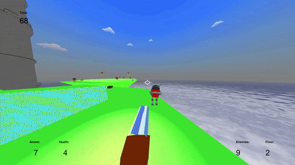
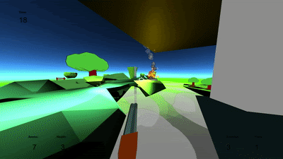
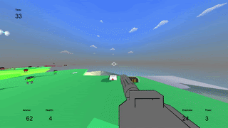

Jackson Clayton
Game Designer/Developer



Development Timeline:
Flying Frags was the first full beatable game I had made in a long time. Flying Frags was very much inspired by the Flash games I played in the computer lab as a kid. It was a short, straightforward first person shooter.
I started the game as a mix between Doom and a bullet hell. The only enemies were spinning turrets and the game-cycle was strafing around them and destroying them.
The largest change I made was around halfway through development when I added in more traditional robot soldiers. I was originally only going to have predictable turrets and unpredictable drones to challenge the player. But I decided to go with the more typical human-like robot enemies because the game was boring with the mostly static enemies. The game changed from dodging bullets to doing dances around the soldier robots and avoiding fire, which helped me learn a lot more about the movement I had programmed and be able to implement that in level design.
Development Focus:
I was going for a wind-waker look with toon shading and cartoony explosions. It (and the sequel) are intentionally supposed to feel dreamlike and nonsensical while still having meaning. When I was making the levels I was inspired by the hikes I went on in the Rocky Mountains and the views I would see, I wanted to contrast that with the robotic enemies to already tell the player there was conflict.
I put an emphasis on speed in the gameplay to already give the player a feeling of power before even shooting an enemy. It is so they know their role in the “story” and how they should play the game.